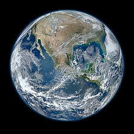
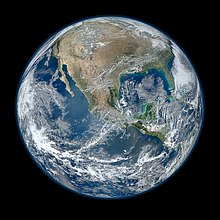
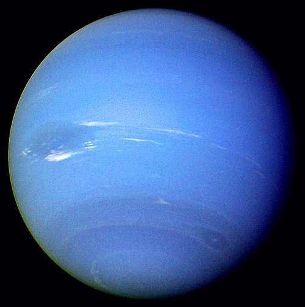
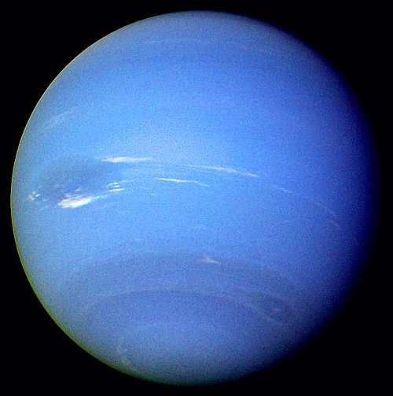
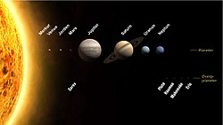

tellus 
mars
tellus 
mars  jupiter
jupiter saturn
saturn  uranus
uranus neptun 
neptun 
Solsystemet er det planetsystemet som består av blant annet solen, jorden og månen. Det består av solen og de himmellegemer som den binder til seg gjennom gravitasjon, og har sin opprinnelse i en gravitasjonskollaps av en gigantisk gass- og støvsky for 4,6 milliarder år siden.
Solsystemet vårt inneholder solen og åtte andre planeter, fem dvergplaneter og hundrevis av måner.
Her skal du se bilde av planetene og lære litt om dem.
